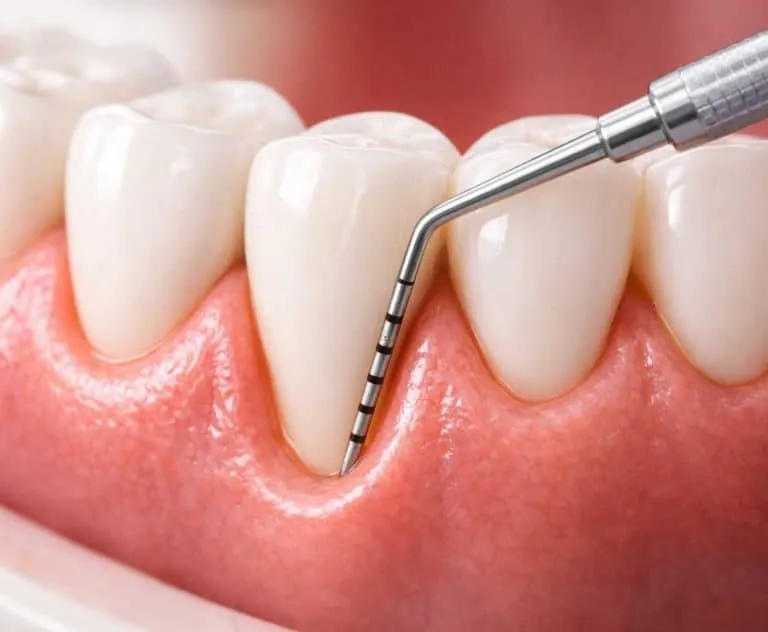

Ver sangre en el cepillo o al morder una manzana es frecuente, pero no conviene asumir que es normal. Una encía sana no debería sangrar de forma habitual. La causa puede ser una inflamación leve o un problema más profundo; una revisión dental permite distinguirlos.
¿Por qué sangran las encías al cepillarse?
La causa más común es la acumulación de placa bacteriana junto al borde de la encía. Si no se retira bien cada día, provoca inflamación: la encía puede verse roja, hinchada y sangrar con facilidad. Cuando la placa se endurece y se convierte en sarro, el cepillo ya no puede retirarlo y hace falta una limpieza profesional.
También puede influir un cepillado demasiado fuerte, un cepillo duro o una limpieza interdental mal realizada. Sin embargo, atribuir todo el sangrado a «haber apretado demasiado» puede retrasar el diagnóstico de una gingivitis o una periodontitis. Si aparece repetidamente, conviene examinar las encías.
Gingivitis y periodontitis: no son lo mismo
La gingivitis es una inflamación de la encía que no ha destruido las estructuras que sujetan el diente. Puede mejorar cuando se controla la placa y se realiza el tratamiento profesional necesario. La periodontitis afecta también a los tejidos y al hueso de soporte; puede producir bolsas alrededor de los dientes, retracción de encía y movilidad. La pérdida de soporte no se revierte simplemente con un enjuague o una limpieza en casa, aunque el tratamiento puede frenar la progresión.
No es posible saber cuál de las dos existe solo por el color de la saliva o por la cantidad de sangre. Hay personas con periodontitis que notan pocos síntomas, y en fumadores el sangrado puede ser menos evidente. Por eso, la exploración periodontal es importante incluso cuando no hay dolor.
Otros factores que pueden favorecer el sangrado
- Cambios hormonales. Durante el embarazo la encía puede reaccionar con más intensidad a la placa. Sangrar no significa que deba dejarse sin revisar.
- Diabetes y tabaco. Se asocian a mayor riesgo de enfermedad periodontal y pueden complicar su control.
- Medicamentos o enfermedades generales. Algunos tratamientos pueden modificar el sangrado o la respuesta de la encía. Informa al dentista de lo que tomas; no suspendas una medicación prescrita por tu cuenta.
- Prótesis o aparatos. Si dificultan la higiene o irritan una zona, puede aparecer inflamación localizada que requiere ajuste o instrucciones de limpieza.
Cuándo pedir cita y cuándo no esperar
Pide una revisión si la encía sangra en varios cepillados, al usar hilo o cepillos interdentales, o al comer. También si notas mal aliento persistente, encías rojas o hinchadas, retracción, dientes que parecen más largos o separación nueva entre piezas. La movilidad dental, el pus, el dolor importante o una hinchazón que aumenta requieren una valoración más rápida.
Si el sangrado es abundante y no se detiene, o la hinchazón dificulta tragar o respirar, busca atención urgente. Si tomas anticoagulantes u otros medicamentos que afecten a la coagulación, informa de ello al solicitar la cita y al profesional que te atienda.
Qué hacer mientras esperas la consulta
No dejes de cepillarte porque veas sangre. Limpia los dientes dos veces al día con pasta fluorada y un cepillo de cerdas suaves, sin frotar con fuerza. Limpia también los espacios entre dientes con hilo o cepillos interdentales adecuados a tu boca; si no sabes cuál elegir, pide que te enseñen la técnica. La constancia ayuda a reducir la placa, pero no sustituye la revisión si el sangrado se repite.
No intentes raspar el sarro con objetos caseros ni uses colutorios como única solución. Algunos enjuagues pueden recomendarse durante un periodo concreto, pero deben formar parte de un plan indicado por el dentista. Tampoco es buena idea iniciar antibióticos sin valoración: la causa del sangrado y el tratamiento correcto pueden ser distintos en cada persona.
Cómo se estudia el sangrado en consulta
El profesional preguntará desde cuándo ocurre, qué zonas sangran, cómo te cepillas, si fumas y si tienes enfermedades o tomas medicación. Después examinará la encía, la placa y el sarro. Puede medir suavemente con una sonda periodontal la profundidad alrededor de los dientes y comprobar si existe sangrado al sondaje. Si sospecha pérdida de soporte, puede indicar radiografías para valorar el hueso.
Con esos datos se diferencia una inflamación limitada a la encía de una periodontitis y se diseña un tratamiento. La periodoncia se ocupa precisamente de diagnosticar, tratar y mantener la salud de estos tejidos.
¿Una limpieza dental basta para solucionarlo?
Depende del diagnóstico. En una gingivitis puede ser suficiente mejorar la higiene y retirar profesionalmente placa y sarro. Si hay periodontitis, suele ser necesaria una limpieza más profunda de las superficies radiculares y un seguimiento específico; en casos avanzados pueden estudiarse otros tratamientos. El mantenimiento posterior es importante para evitar nuevas acumulaciones y detectar cambios a tiempo.
Si ya llevas implantes, presta atención también a la encía que los rodea. El sangrado o la inflamación en esa zona puede indicar un problema periimplantario y debe revisarse. Puedes leer nuestra guía de mantenimiento de implantes.
Preguntas que puedes llevar preparadas
- ¿El sangrado se debe a gingivitis, periodontitis u otra causa?
- ¿Hay pérdida de soporte óseo o bolsas periodontales?
- ¿Qué técnica de cepillado y limpieza interdental me conviene?
- ¿Necesito una limpieza profesional o tratamiento periodontal?
- ¿Cada cuánto tendré que acudir a revisión según mi riesgo?
En Marcos Martínez Clínica Dental, en Opañel, cerca de Oporto, valoramos las encías con cita previa. Si notas sangrado recurrente, llámanos y describe desde cuándo ocurre y si hay otros síntomas.
Revisa la causa del sangrado
La exploración permite saber qué está pasando y qué cuidado necesita tu encía. Por favor, solicita cita antes de acudir a consulta.
Llamar: 915 60 81 09 WhatsApp: 662 671 383